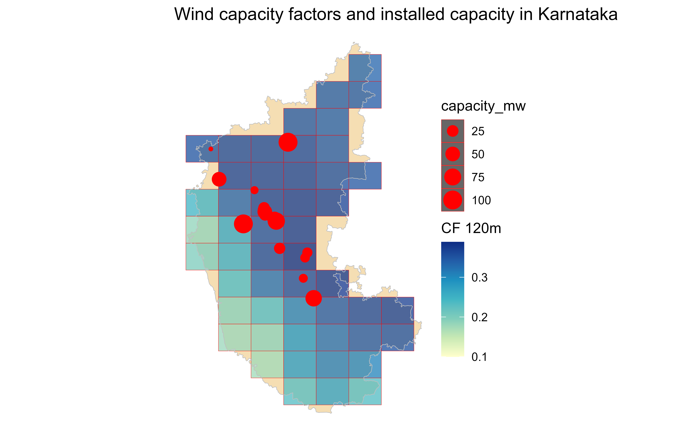
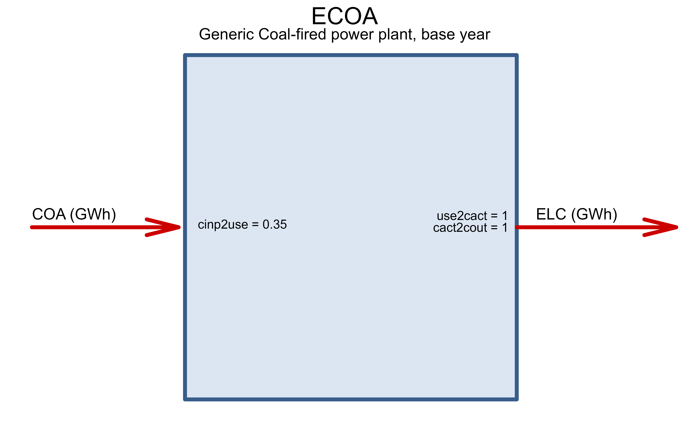
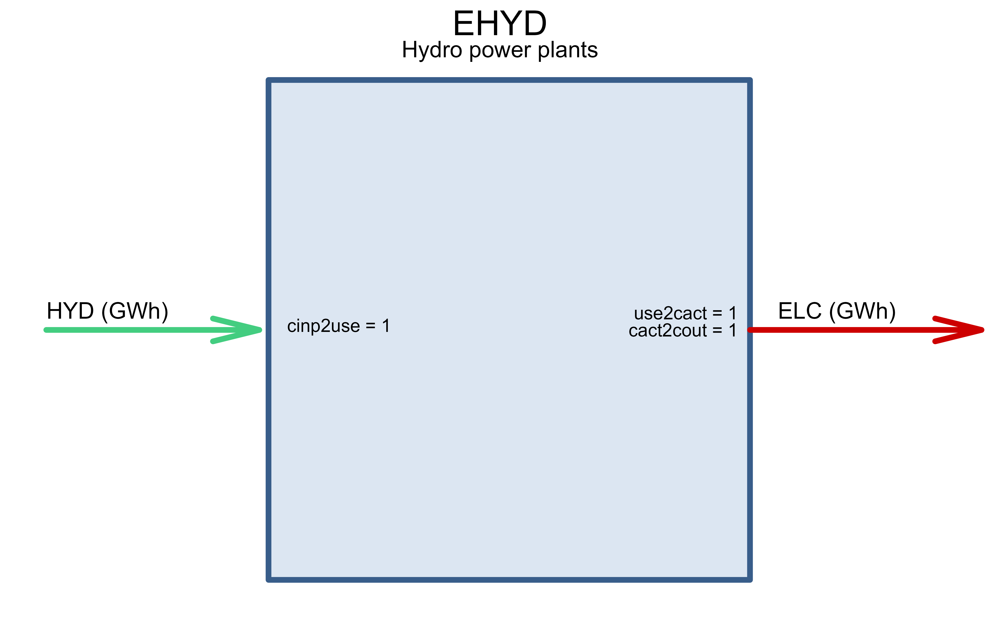
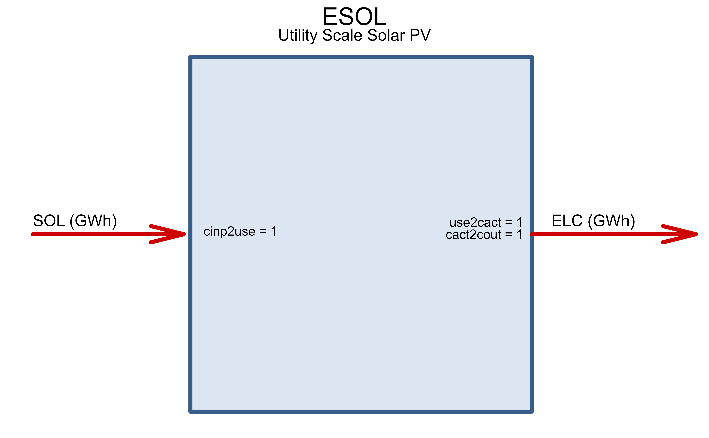

Karnataka electric power sector capacity expansion model
One region, coperplate version (this documentation is in progress)
Source:vignettes/articles/karnataka.Rmd
karnataka.RmdConfiguration
tmz <- "Asia/Kolkata" # model timezone
baseYear <- 2019 # model base year
# modYears <- c(baseYear + c(0, 2), seq(2025, 2060, by = 5)) # model years
# weaYears <- 2019 # weather years (from MERRA-2)
# Currency conversion
INR_Crore_2_USD <- 136825.20 # Google converter, Jan 13, 2021
INR_2_USD <- INR_Crore_2_USD / 1e7
INR_Crore_2_MUSD <- INR_Crore_2_USD/1e6
INR_Lakh_2_MUSD <- INR_Crore_2_MUSD/100
ideea_sf <- get_ideea_map(nreg = 32, offshore = FALSE, ROW = FALSE, rename = TRUE)
karnataka_sf <- ideea_sf[ideea_sf$region == "KA", ]
plot(ideea_sf["region"], col = NA, reset = F, main = "Karnataka")
plot(karnataka_sf["region"], col = "red", add = T)Weather classes
Wind (by resource class)
# generating capacity
gen_cap <- ideea_data$karnataka$capacity_MW
# wind capacity factors
wind_cf <- ideea_data$karnataka$wind_cf
# wind and solar average potential estimates
merra_CF_mean <- ideea_data$karnataka$merra_CF_mean
# wind_loc_sf <- ideea_data$karnataka$wind_loc_sf
(wind_120m <- unique(merra_CF_mean$af120m_class))
#> [1] "AF20" "AF25" "AF15" "AF30" "AF35"
ww <- merra_CF_mean$af120m_class %in% wind_120m
ggplot(karnataka_sf) +
geom_sf(aes(),
fill = "wheat",
colour = "white", alpha = 1, size = .5, show.legend = F
) +
theme_void() +
# ggplot(merra_CF_mean[ww,]) +
geom_tile(aes(lon, lat, fill = af120m),
data = merra_CF_mean,
inherit.aes = F, alpha = .75, show.legend = T
) +
scale_fill_distiller(
palette = "YlGnBu", name = "CF 120m", direction = 1,
limits = c(0.1, NA), na.value = "grey70"
) +
geom_tile(aes(lon, lat),
data = merra_CF_mean[ww, ],
colour = "red", fill = NA,
inherit.aes = F, show.legend = T
) +
geom_sf(fill = NA, colour = "grey", alpha = 1, size = .5,
data = karnataka_sf) +
geom_point(aes(lon, lat, size = capacity_mw),
colour = "red",
data = ideea_data$karnataka$wind_loc_sf,
inherit.aes = FALSE) +
labs(
title = "Wind capacity factors and installed capacity in Karnataka"
# subtitle = "Wind resource classes and potential locations",
# caption = "Source: MERRA-2, WRI, IDEEA"
)
# theme_ideea_map()
# Create weather-class for every AF-type of the resource
summary(wind_cf$wcf_120m)
#> Min. 1st Qu. Median Mean 3rd Qu. Max.
#> 0.01405 0.21568 0.36705 0.35481 0.47791 0.75000
WWIN_120m <- newRepository("WWIN_120m")
for (i in wind_120m) {
ii <- wind_cf$af120m_class == i
WWIN_i <- newWeather(
name = paste0("WWIN_", i),
# desc = "",
# unit = "kWh/kWh_max",
timeframe = "HOUR",
weather = data.frame(
# region = as.character(),
# year = merra_CF_mean$mYear[ii],
slice = wind_cf$slice[ii],
wval = wind_cf$wcf_120m[ii]
)
)
WWIN_120m <- add(WWIN_120m, WWIN_i)
}
names(WWIN_120m@data)
#> [1] "WWIN_AF20" "WWIN_AF25" "WWIN_AF15" "WWIN_AF30" "WWIN_AF35"Solar (regional average)
# solar average capacity factors
solar_cf <- ideea_data$karnataka$solar_cf
# Create weather-class for solar resource (average)
summary(solar_cf$scf)
#> Min. 1st Qu. Median Mean 3rd Qu. Max.
#> 0.00000 0.00000 0.01139 0.24138 0.48715 1.00000
WSOL_mean <- newWeather(
name = "WSOL",
# desc = "",
# unit = "kWh/kWh_max",
timeframe = "HOUR",
weather = data.frame(
slice = solar_cf$slice,
wval = solar_cf$scf
)
)
# gen_cap$cap_MW[grepl("Solar", gen_cap$enSource)] / 1e3 *
# sum(merra_sol_mean$afsol)Hydro (reservoirs inflows)
# Inflow and discharge data of reservoirs
w_hyd <- ideea_data$karnataka$reservoir |>
filter(year(datetime) %in% baseYear) %>%
mutate(date = as_date(datetime)) %>%
ungroup() %>%
dplyr::select(-datetime) %>%
mutate(slice = dtm2tsl(date, format = "d365"))
w_hyd[c(1, nrow(w_hyd)),] # accumulated energy -first and last days of the year
#> DISCHARGE_MU EQENERGY_MU INFLOW_MU date slice
#> <num> <num> <num> <Date> <char>
#> 1: -28.19596 6133.078 2.625201 2019-01-01 d001
#> 2: -33.75062 7136.870 8.159480 2019-12-31 d365
sum(w_hyd$INFLOW_MU) # total inflow
#> [1] 9773.639
sum(w_hyd$DISCHARGE_MU) # total discharge (!some days are missing in the data-Adjusting Coefficient)
#> [1] -8006.358
# Adjust the 3-dams data, adding reservoirs with missing info
gen_cap
#> # A tibble: 6 × 6
#> year enSource cap_MW gen_MU af type
#> <dbl> <chr> <dbl> <dbl> <dbl> <chr>
#> 1 2019 Biomass 134. 86.5 0.0736 biomass
#> 2 2019 Hydro 4665. 14327. 0.351 hydro
#> 3 2019 Net_Import 4133. 20562. 0.568 net_import
#> 4 2019 Solar 7038 11524. 0.216 solar
#> 5 2019 Thermal 10379. 16578. 0.182 thermal
#> 6 2019 Wind 4778. 8528. 0.204 wind
ii <- grepl("Hydro", gen_cap$enSource)
summary(ii)
#> Mode FALSE TRUE
#> logical 5 1
gen_cap$gen_MU[ii]
#> [1] 14327.19
sum(w_hyd$INFLOW_MU)
#> [1] 9773.639
(hyd_adj <- gen_cap$gen_MU[ii] / sum(w_hyd$INFLOW_MU)) # Adjusting Coefficient
#> [1] 1.465901
# Hydro weather class repository
WHYD_AF <- newWeather("WHYD_AF",
desc = "Exogenous hydro energy inflow",
region = "KA",
timeframe = "YDAY",
weather = data.frame(
region = "KA",
# year = 2010,
slice = w_hyd$slice,
wval = w_hyd$INFLOW_MU * hyd_adj # assumption
)
)Generating technologies
Thermal
gen_cap
#> # A tibble: 6 × 6
#> year enSource cap_MW gen_MU af type
#> <dbl> <chr> <dbl> <dbl> <dbl> <chr>
#> 1 2019 Biomass 134. 86.5 0.0736 biomass
#> 2 2019 Hydro 4665. 14327. 0.351 hydro
#> 3 2019 Net_Import 4133. 20562. 0.568 net_import
#> 4 2019 Solar 7038 11524. 0.216 solar
#> 5 2019 Thermal 10379. 16578. 0.182 thermal
#> 6 2019 Wind 4778. 8528. 0.204 wind
ii <- grepl("Thermal", gen_cap$enSource)
summary(ii)
#> Mode FALSE TRUE
#> logical 5 1
ECOA <- newTechnology(
name = "ECOA",
desc = "Generic Coal-fired power plant, base year",
# region = ppb$region[ii],
input = list(
comm = "COA",
unit = "GWh",
combustion = 1
),
output = list(
comm = "ELC",
unit = "GWh"
),
cap2act = 24 * 365,
ceff = list(
comm = c("COA"),
cinp2use = c(.35)
),
af = list(
af.lo = .2, # aggregated lower bound
rampup = 48, # hours, cold start from 0 to 100, assumption
rampdown = 48 # assumption
),
afs = list(
slice = "ANNUAL",
afs.up = .6, # assumption
afs.lo = .2 # assumption
),
fixom = list(
# fixom = .05 * 800 # 5% a year of invcost (800 USD/kW)
fixom = convert("MUSD/MW", "MUSD/GW", 11.7 * INR_Lakh_2_MUSD)
),
varom = list(
# varom = 0.01 # USD/kWh - assumption
# convert("USD/kWh", "MUSD/GWh", 1)
varom = convert("USD/kWh", "MUSD/GWh", 0.6 * INR_2_USD)
),
invcost = list(
invcost = convert("MUSD/MW", "MUSD/GW", 8.02 * INR_Crore_2_MUSD)
),
capacity = data.frame(
region = "KA",
year = c(rep(baseYear, sum(ii)), rep(2040, sum(ii))),
stock = c(gen_cap$cap_MW[ii] / 1e3, 0.7 * gen_cap$cap_MW[ii] / 1e3) # assumption
),
end = list(
end = 2010
),
olife = list(
olife = 25
),
timeframe = "HOUR"
)
draw(ECOA)
Hydro
ii <- grepl("Hydro", gen_cap$enSource)
stopifnot(sum(ii) == 1) # check
EHYD <- newTechnology(
name = "EHYD",
desc = "Hydro power plants",
# region = ppb$region[ii],
region = "KA",
input = list(
comm = "HYD",
unit = "GWh",
combustion = 0
),
output = list(
comm = "ELC",
unit = "GWh"
),
# aux = list(acomm = "DAM"),
cap2act = 24 * 365,
# ceff = list(
# comm = c("HYD"),
# cinp2use = c(1)
# ),
# aeff = data.frame(
# acomm = "DAM",
# comm = "HYD",
# cinp2ainp = 1
# ),
af = list(
af.lo = .1, # aggregated lower bound
# rampup = 4, # hours, cold start from 0 to 100, assumption
rampdown = 8 # assumption
),
# af = list(
# # region = ppb$region[ii],
# # slice = ,
# af.fx = ppb$af[ii]
# ),
fixom = list(
fixom = convert("MUSD/MW", "MUSD/GW", 20 * INR_Lakh_2_MUSD)
),
# varom = list(
# varom =
# ),
invcost = list(
# year = 2010,
invcost = convert("MUSD/MW", "MUSD/GW", 8.02 * INR_Crore_2_MUSD)
),
capacity = data.frame(
region = "KA",
year = c(rep(baseYear, sum(ii)), rep(2060, sum(ii))),
stock = c(gen_cap$cap_MW[ii] / 1e3, gen_cap$cap_MW[ii] / 1e3)
),
# start = list(
# start = 2060
# ),
end = list(
end = 2010
),
olife = list(
olife = 40
),
timeframe = "HOUR"
)
draw(EHYD)
Solar
ii <- grepl("Solar", gen_cap$enSource)
stopifnot(sum(ii) == 1) # check
ESOL <- newTechnology(
name = "ESOL",
desc = "Utility Scale Solar PV",
# region = "AZ",
input = list(
comm = "SOL",
unit = "GWh"
),
output = list(
comm = "ELC",
unit = "GWh"
),
cap2act = 365 * 24,
af = list(
af.fx = 1 # forcing output when resource is available
),
weather = list(
weather = "WSOL",
waf.fx = 1 # weather factor (multiplier) will be applied to af.fx
),
fixom = list(
# fixom = 10 # assumed, 1% of investment costs a year
fixom = convert("MUSD/MW", "MUSD/GW", 4.5 * INR_Lakh_2_MUSD)
),
invcost = list(
# Assuming 1$/Watt
# https://www.nrel.gov/news/press/2017/nrel-report-utility-scale-solar-pv-system-cost-fell-last-year.html
# invcost = 1000 # convert("USD/W", "MUSD/GW", 1)
invcost = convert("MUSD/MW", "MUSD/GW", 3.4 * INR_Crore_2_MUSD)
),
capacity = data.frame(
region = "KA",
year = c(rep(baseYear, sum(ii)),
rep(2040, sum(ii)),
rep(2050, sum(ii))),
stock = c(gen_cap$cap_MW[ii] / 1e3,
0.8 * gen_cap$cap_MW[ii] / 1e3,
0 * gen_cap$cap_MW[ii])
),
# start = list(
# start = 2017
# ),
# end = list(end = 2000),
olife = list(
olife = 25
)
)
draw(ESOL)
# bulk solar resource
sol_max_GW <- ideea_data$karnataka$solar_max_GW
# Limits on solar total capacity
CSOL_UP <- newConstraintS(
name = "CSOL_UP",
eq = "<=",
type = "capacity",
for.each = data.frame(
year = NA,
tech = "ESOL",
region = "KA"
# region = reg_area$region
),
rhs = data.frame(
# year = modYears,
tech = "ESOL",
region = sol_max_GW$region,
# up to 2% of territory per region
rhs = 0.02 * round(sol_max_GW$max_GW, 1e-20)
),
defVal = 1e-20 # to avoid dropping zeros in some solvers
)Wind
ii <- grepl("Wind", gen_cap$enSource)
summary(ii)
#> Mode FALSE TRUE
#> logical 5 1
EWIN <- newTechnology(
name = "EWIN",
desc = "Onshore wind farm",
# WIN10_AF@region, # Limiting to regions with available resource
input = list(
comm = "WIN",
unit = "GWh",
combustion = 0
),
output = list(
comm = "ELC",
unit = "GWh"
),
cap2act = 365 * 24,
af = list(
af.fx = 1 # forcing output when resource is available
),
weather = list(
weather = "WWIN", # assumption
waf.fx = c(1)
# waf.up = c(1) #
),
fixom = list(
# fixom = 15 # Assumed, 1% a year
fixom = convert("MUSD/MW", "MUSD/GW", 8 * INR_Lakh_2_MUSD)
),
invcost = list(
# Assuming 1.5$/Watt
# https://www.irena.org/-/media/Files/IRENA/Agency/Publication/2018/Jan/IRENA_2017_Power_Costs_2018.pdf
# invcost = 1500 #
invcost = convert("MUSD/MW", "MUSD/GW", 6 * INR_Crore_2_MUSD)
),
capacity = data.frame(
region = "KA",
year = c(rep(baseYear, sum(ii)),
rep(2040, sum(ii)),
rep(2050, sum(ii))),
stock = c(gen_cap$cap_MW[ii] / 1e3,
0.8 * gen_cap$cap_MW[ii] / 1e3,
0 * gen_cap$cap_MW[ii])
),
# start = list(
# start = 2017
# ),
end = list(end = 2000),
olife = list(
olife = 25
)
)
draw(EWIN)
EWIN_120m <- newRepository("EWIN_120m")
for (i in 1:length(WWIN_120m@data)) {
wName <- WWIN_120m@data[[i]]@name
tName <- gsub("WWIN_", "EWIN_", wName)
EWIN_i <- newTechnology(
name = tName,
desc = "Utility Scale Solar PV",
# region = "AZ",
input = list(
comm = "SOL",
unit = "GWh"
),
output = list(
comm = "ELC",
unit = "GWh"
),
cap2act = 365 * 24,
af = list(
af.fx = 1 # forcing output when resource is available
),
weather = list(
weather = wName,
waf.fx = 1 # weather factor (multiplier) will be applied to af.fx
),
# fixom = list(
# fixom = 10 # assumed, 1% of investment costs a year
# ),
invcost = list(
# Assuming 1$/Watt
# https://www.nrel.gov/news/press/2017/nrel-report-utility-scale-solar-pv-system-cost-fell-last-year.html
invcost = 1000 # convert("USD/W", "MUSD/GW", 1)
),
# start = list(
# start = 2017
# ),
# end = list(end = 2030),
olife = list(
olife = 25
)
)
EWIN_120m <- add(EWIN_120m, EWIN_i)
# draw(EWIN)
}
# estimated bulk wind resource
win_max_GW <- ideea_data$karnataka$wind_max_GW
# Limits on wind total capacity
CWIN_UP <- newConstraintS(
name = "CWIN_UP",
eq = "<=",
type = "capacity",
for.each = data.frame(
year = NA,
tech = paste0("EWIN_", win_max_GW$af120m_class),
region = win_max_GW$region
),
rhs = data.frame(
year = NA,
tech = paste0("EWIN_", win_max_GW$af120m_class),
region = win_max_GW$region,
rhs = 0.1 * round(win_max_GW$max_GW, 1e-20) # up to 10% of territory per region
),
defVal = 1e-20 # to avoid dropping zeros in some solvers
)Commodities
ELC <- newCommodity("ELC", timeframe = "HOUR")
CO2 <- newCommodity("CO2", timeframe = "ANNUAL")
SOL <- newCommodity("SOL", timeframe = "ANNUAL")
WIN <- newCommodity("WIN", timeframe = "ANNUAL")
WIF <- newCommodity("WIF", timeframe = "ANNUAL")
UHV <- newCommodity(
name = "UHV",
desc = "Ultra High Voltage electricity",
timeframe = "HOUR"
)
COA <- newCommodity(
name = "COA",
desc = "All coals",
# emis = list( #
# comm = "CO2", #
# unit = "kt/GWh", #
# mean = convert("kt/PJ", "kt/GWh", 100) #
# ),
timeframe = "ANNUAL"
)
GAS <- newCommodity(
name = "GAS",
desc = "Natural gas",
timeframe = "ANNUAL"
)
BIO <- newCommodity(
name = "BIO",
desc = "Biomass",
timeframe = "ANNUAL"
)
HYD <- newCommodity(
name = "HYD",
desc = "Hydro energy",
timeframe = "YDAY"
)
# DAM <- newCommodity(
# name = 'DAM',
# desc = "Hydro energy from Dam", # Auxiliary/artificial
# timeframe = "YDAY")
NUC <- newCommodity(
name = "NUC",
desc = "Nuclear energy",
timeframe = "ANNUAL"
)Demand
dem_baseYear <- ideea_data$karnataka$load_curve |>
filter(year == baseYear)
# projected demand growth
dem_last_year <- dem_baseYear %>%
mutate(
year = 2070,
MWh = 5 * MWh) # assume 5X growth from 2019 to 2070
dem_modYear <- bind_rows(dem_baseYear, dem_last_year)
#Demand class repository
DEM_ELC_DH <- newDemand(
name = "DEM_ELC_DH",
desc = "Demand by hours and year-days, full year",
commodity = "ELC",
unit = "GWh",
dem = data.frame(
year = dem_modYear$year,
region = "KA",
slice = dem_modYear$slice,
dem = round(dem_modYear$MWh / 1e3, 3)
)
)
# Check
dim(DEM_ELC_DH@dem)
#> [1] 17472 4
dim(DEM_ELC_DH@dem)[1] / 365 / 24
#> [1] 1.994521
# DEM_ELC_DH@dem[is.na(DEM_ELC_DH@dem$dem), ] # check for missing valuesSupply
RES_SOL <- newSupply(
name = "RES_SOL",
desc = "Terrestrial solar radiation",
commodity = "SOL",
unit = "GWh"
# slice = "ANNUAL"
)
RES_WIN <- newSupply(
name = "RES_WIN",
desc = "Onshore wind",
commodity = "WIN",
# region = unique(wnd_af10$region),
unit = "GWh"
# slice = "ANNUAL"
)
# RES_WFF <- newSupply(
# name = "RES_WFF",
# desc = "Offshore wind - maximum potential",
# commodity = "WFF",
# region = unique(wndf_af10$region),
# unit = "GWh",
# slice = "ANNUAL"
# )
RES_HYD <- newSupply(
name = "RES_HYD",
desc = "Hydro-resource",
commodity = "HYD",
# slice = "YDAY",
weather = data.frame(
weather = "WHYD_AF",
wava.fx = 1
),
availability = list(ava.fx = 1)
)
SUPNUC <- newSupply(
name = "SUPNUC",
commodity = "NUC",
unit = "GWh",
availability = list(
# ava.up = convert("GWh", "PJ", 20*24*365),
# http://www.world-nuclear.org/information-library/economic-aspects/economics-of-nuclear-power.aspx
cost = convert("USD/kWh", "MUSD/GWh", .39 / 100)
)
# slice = "ANNUAL"
)
SUPCOA <- newSupply(
name = "SUPCOA",
commodity = "COA",
desc = "Simplified coal supply",
availability = list(
# cost = convert("USD/tce", "MUSD/GWh", 70 / .7)
cost = convert("USD/tce", "MUSD/GWh", 6000 * INR_2_USD / 0.7) # 0.7 tone -> tce
)
# slice = "ANNUAL"
)
# 1,000 Cubic Feet Of Natural Gas to Therms (u.s.) = 10.0024
# 4 USD/cu.ft ~= 0.4 USD/therm
SUPGAS <- newSupply(
name = "SUPGAS",
desc = "Simplified gas supply",
commodity = "GAS",
availability = list(
cost = convert("USD/therm", "MUSD/GWh", 0.5)
)
# slice = "ANNUAL"
)
SUPOIL <- newSupply(
name = "SUPOIL",
desc = "Simplified oil supply",
commodity = "OIL",
availability = list(
cost = convert("USD/therm", "MUSD/GWh", 0.5)
)
# slice = "ANNUAL"
)
SUPBIO <- newSupply(
name = "SUPBIO",
desc = "Simplified Biomass supply",
commodity = "BIO",
availability = list(
cost = convert("USD/therm", "MUSD/GWh", 0.4) # assumption
)
# slice = "ANNUAL"
)Energy storage
Hydro reservoirs
generation_hourly <- ideea_data$karnataka$generation_hourly
# w_hyd
# summary(w_hyd$DISCHARGE_MU)
# summary(w_hyd$INFLOW_MU)
# summary(w_hyd$EQENERGY_MU)
#
# sum(w_hyd$DISCHARGE_MU)
# sum(w_hyd$INFLOW_MU)
# sum(w_hyd$EQENERGY_MU)
#
#
# ii <- grepl("(d001)|(d365)", w_hyd$slice)
# sum(ii)
# w_hyd[ii, ]
#
STGHYD_dat <- tibble(
stock = max(abs(w_hyd$EQENERGY_MU)),
cout.up = -min(w_hyd$DISCHARGE_MU) / stock * 365 # annual generation per GW of storage capacity
)
STGHYD_dat
#> # A tibble: 1 × 2
#> stock cout.up
#> <dbl> <dbl>
#> 1 8424. 10.1
ii <- grepl("(d001)", w_hyd$slice)
sum(ii)
#> [1] 1
STGHYD <- newStorage(
name = "STGHYD",
commodity = "HYD",
desc = "Hydro reservoirs",
cap2stg = 1, #
# aux = list(acomm = "DAM"),
olife = list(olife = 25),
# invcost = list(
# # See IRENA 2030 (from 77 to 574, p.77)
# invcost = convert("USD/kWh", "MUSD/GWh", 200)
# ),
af = data.frame(
# inpeff = .99, # assumed efficiency of charging
# stgeff = .99, # assumed efficiency of storing energy (annual)
# outeff = .99, # discharge efficiency
cout.up = STGHYD_dat$cout.up * hyd_adj
# cout.up = 12.1
),
# aeff = data.frame(
# acomm = "DAM",
# out2aout = 1
# ),
capacity = data.frame(
region = "KA",
# year = modYears,
stock = STGHYD_dat$stock * hyd_adj
# slice = w_hyd$slice[ii],
# charge = w_hyd$EQENERGY_MU[ii]
),
end = list(end = 2010)
)
# WHYD_AF1 <- WHYD_AF
# WHYD_AF1@weather$wval[1] <- w_hyd$EQENERGY_MU[ii]
CHYD2DAM <- newConstraint(
name = "CHYD2DAM",
eq = "==",
for.each = list(
# year = modYears,
year = NA,
region = "KA",
slice = ideea_modules$calendars$calendar_d365_h24@timeframes$YDAY
),
tr1 = list(
variable = "vSupOut",
for.sum = list(sup = "RES_HYD")
),
tr2 = list(
variable = "vStorageInp",
for.sum = list(stg = "STGHYD"), mult = -1
),
rhs = data.frame(
# year = rep(modYears, each = length(timeslices365$YDAY)),
year = NA,
region = "KA",
slice = ideea_modules$calendars$calendar_d365_h24@timeframes$YDAY,
# slice = rep(timeslices365$YDAY, length(modYears)),
rhs = 1e-20
),
defVal = 1e-20
)
CDAM2EHYD <- newConstraint(
name = "CDAM2EHYD",
eq = "==",
for.each = list(
# year = modYears,
year = NA,
region = "KA"
# slice = timeslices365$YDAY
),
tr1 = list(
variable = "vStorageOut",
for.sum = list(stg = "STGHYD",
ideea_modules$time_tables$d365_h24$YDAY)
),
tr2 = list(
variable = "vTechInp",
for.sum = list(tech = "EHYD",
ideea_modules$time_tables$d365_h24$YDAY),
mult = -1
),
rhs = data.frame(
# year = rep(modYears, each = length(timeslices365$YDAY)),
# year = modYears,
year = NA,
region = "KA",
# slice = rep(timeslices365$YDAY, length(modYears)),
rhs = 1e-20
),
defVal = 1e-20
)
CHYDLEV <- newConstraint(
name = "CHYDLEV",
for.each = data.frame(
# year = modYears,
year = NA,
region = "KA",
slice = ideea_modules$calendars$calendar_d365_h24@timeframes$YDAY
),
vrb = list(
variable = 'vStorageStore',
for.sum = list(stg = 'STGHYD')),
eq = ">=",
rhs = data.frame(
# year = modYears,
year = NA,
region = "KA",
slice = ideea_modules$calendars$calendar_d365_h24@timeframes$YDAY,
rhs = min(w_hyd$EQENERGY_MU)
),
defVal = 1e-20
)Batteries
STGBTR <- newStorage(
name = "STGBTR",
commodity = "ELC",
desc = "Generic grid-integrated intraday storage (battery)",
cap2stg = 1, #
olife = list(olife = 25),
end = list(end = baseYear),
invcost = list(
# See IRENA 2030 (from 77 to 574, p.77)
invcost = convert("USD/kWh", "MUSD/GWh", 300)
),
seff = data.frame(
inpeff = 0.8 # assumed efficiency of charging
# stgeff = 0.9 # assumed efficiency of storing energy (annual)
# outeff = 1 # discharge efficiency
)
)
# STGBTR@varomTrade
(interregional export/import, exogenous)
EIMP1 <- newImport(
name = "EIMP",
desc = "Demand curtailments, electricity import at high price (to identify needs for back-up techs such as biomass)",
commodity = "ELC",
imp = list(
price = convert("USD/kWh", "MUSD/GWh", 1) # USD per kWh, marginal price
)
)
EIMP01 <- EIMP1
EIMP01@imp$price <- .1 * EIMP1@imp$price
EIMP10 <- EIMP1
EIMP10@imp$price <- 10 * EIMP1@imp$price
unique(gen_cap$enSource)
#> [1] "Biomass" "Hydro" "Net_Import" "Solar" "Thermal"
#> [6] "Wind"
unique(generation_hourly$type)
#> [1] "biomass" "export" "hydro" "import" "solar" "thermal" "wind"
ii <- year(generation_hourly$date) %in% baseYear &
grepl("(ex|im)port", generation_hourly$type, ignore.case = T)
unique(generation_hourly[ii, ]$type)
#> [1] "export" "import"
generation_hourly[ii, ]
#> date hour type GWh
#> <POSc> <int> <char> <num>
#> 1: 2019-01-01 00:00:00 1 export -1.39000
#> 2: 2019-01-01 00:00:00 1 import 3.46824
#> 3: 2019-01-01 01:00:00 2 export -1.38100
#> 4: 2019-01-01 01:00:00 2 import 3.38224
#> 5: 2019-01-01 02:00:00 3 export -1.42700
#> ---
#> 17516: 2019-12-31 21:00:00 22 import 4.11719
#> 17517: 2019-12-31 22:00:00 23 export -1.71200
#> 17518: 2019-12-31 22:00:00 23 import 3.99319
#> 17519: 2019-12-31 23:00:00 24 export -1.73500
#> 17520: 2019-12-31 23:00:00 24 import 3.83219
trade <- generation_hourly[ii, ] %>%
pivot_wider(names_from = type, values_from = GWh) %>%
mutate(slice = dtm2tsl(date), .before = hour)
IMPORT <- newImport(
name = "IMPORT",
commodity = "ELC",
imp = data.frame(
slice = trade$slice,
imp.fx = trade$import
)
)
dim(IMPORT@imp)
#> [1] 8760 7
EXPORT <- newExport(
name = "EXPORT",
commodity = "ELC",
exp = data.frame(
slice = trade$slice,
exp.fx = -trade$export
)
)
dim(EXPORT@exp)
#> [1] 8760 7Additional constraints
# No new capacity
CNCAP0 <- newConstraint(
name = "CNCAP0",
eq = "==",
# for.each = data.frame(
# # year = modYears,
# # tech = "ESOL",
# region = "KA"
# ),
tr1 = list(
variable = "vTechNewCap"
# for.sum = list(sup = "RES_HYD")
),
rhs = data.frame(
rhs = 1e-100
),
defVal = 1e-100
)The model
# Repository with all the data-objects
reps <- newRepository(
name = "main_repository",
# Commodities
ELC, SOL, WIN, HYD, COA, CO2, # DAM, WIF,
# Resources (supply)
RES_SOL, RES_WIN, RES_HYD,
SUPCOA,
# SUPBIO,
# Weather factors
WHYD_AF,
WSOL_mean,
WWIN_120m,
# Generating technologies
ESOL,
# EWIN,
EWIN_120m,
# ESOL_repo@data[[1]],
# EWIN_repo@data[[1]],
EHYD,
ECOA,
# Storage
STGHYD,
STGBTR,
CHYDLEV,
# Exogenous interregional trade
IMPORT,
EXPORT,
# Hydro dam operation constraints
CHYD2DAM,
CDAM2EHYD,
# demand
DEM_ELC_DH,
# curtailing demand in case of high marginal costs
EIMP10
)
summary(reps)
#> commodity constraint demand export import storage supply
#> 6 3 1 1 2 2 4
#> technology weather
#> 8 7
names(reps)
#> [1] "ELC" "SOL" "WIN" "HYD" "COA"
#> [6] "CO2" "RES_SOL" "RES_WIN" "RES_HYD" "SUPCOA"
#> [11] "WHYD_AF" "WSOL" "WWIN_AF20" "WWIN_AF25" "WWIN_AF15"
#> [16] "WWIN_AF30" "WWIN_AF35" "ESOL" "EWIN_AF20" "EWIN_AF25"
#> [21] "EWIN_AF15" "EWIN_AF30" "EWIN_AF35" "EHYD" "ECOA"
#> [26] "STGHYD" "STGBTR" "CHYDLEV" "IMPORT" "EXPORT"
#> [31] "CHYD2DAM" "CDAM2EHYD" "DEM_ELC_DH" "EIMP"
full_calendar_d365_h24 <- IDEEA::ideea_modules$calendars$calendar_d365_h24
# model-class object
mod <- newModel(
name = "KA",
desc = "Karnataka electricity model",
## in case of infeasibility, `dummy` variables can be added
# debug = data.frame(#comm = "ELC",
# dummyImport = 1e6,
# dummyExport = 1e6),
region = "KA",
discount = 0.05,
calendar = full_calendar_d365_h24,
horizon = newHorizon(period = baseYear:2070,
intervals = c(1, 3, rep(5, 8)),
mid_is_end = TRUE),
data = reps
)
# check model horizon
# getHorizon(mod)
# (optional) the model info
{mod@desc <- "
Karnataka power sector, renewables balancing version,
1 region, 1 hour resolution,
3 types of renewables,
2 types of storages."}Scenarios
Base-year check
# set_progress_bar("progress")
set_progress_bar("bw")
# 1. Interpolation of parameters
# scen_KA_1Y <- interpolate_model(mod, name = "scen_KA_1Y", desc = "")
horizon_BY <- newHorizon(period = baseYear, intervals = 1)
# getHorizon(mod)
scen_KA_1Y <- interpolate(mod, name = "scen_KA_1Y", CNCAP0, horizon_BY)
# scen_KA_1Y@path
scen_KA_1Y <- write_script(
scen_KA_1Y,
solver = solver_options$julia_highs
# solver = solver_options$gams_gdx_cplex_parallel
)
# scen_KA_1Y@misc$tmp.dir
scen_KA_1Y <- solve_scenario(scen_KA_1Y, wait = T)
scen_KA_1Y <- read(scen_KA_1Y)
# save Karnataka model to IDEEA repositorytbc…